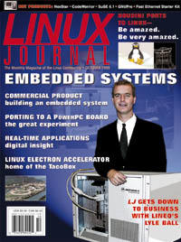

Shutdown Archive web server
Search:
Linux Journal
Issue #66/October 1999

Focus
Focus: Embedded Systems
by Marjorie Richardson
Features
Portable Real-Time Applications
by Juergen Kahrs
The purpose of computing is insight, not numbers. --Richard Hamming, 1915-1998
Embedding Linux in a Commercial Product
by Joel R. Williams
A look at embedded systems and what it takes to build one.
Porting Linux to a Power PC Board
by He Zhu and Xiaoqiang Chen
An experiment and experience in using Linux in an embedded application.
Embedding Linux to Control Accelerators and Experiments
by A. Gotz, P. Makijarvi, B. Regad, M. Perez, P. Mangiagalli
A scientific laboratory in Europe depends on Linux for controlling equipment used in their research.
Forum
Running Linux on a Laptop
by Erik Max Francis
A quick look at what to look for in a laptop for Linux and how to set it up.
Transvirtual Adopts Microsoft Java Extensions
by Craig Knudsen
Mr. Knudsen tells us why this company chose to add MS extensions to Kaffe, the Open Source Java implementation.
Houdini: Magic Doesn't Just Happen
by Michael J. Hammel
Side Effects Software pulls the Linux penguin out of its hat with a port of Houdini.
upFRONT
by Doc Searls
Lyle Ball, Caldera
by Marjorie Richardson
Reviews
Cygnus GNUPro Toolkit for Linux, v1.0
by Daniel Lazenby
Fast Ethernet Network Starter Kit (FENSK04)
by John Kacur
SuSE Linux 6.1
by Jason Kroll
CodeWarrior for Red Hat, Linux, GNU Edition, Version 4
by Jason Kroll
NexStar
by Jason Kroll
Learning Python
by Phil Hughes
Linux for Dummies (2nd Edition)
by Harvey Friedman
Columns
Linux Apprentice: Creating CDs
Complete instructions for storing your data on CD.
by Alex Withers
At the Forge
Dynamic Graphics and Personalization
by Reuven M. Lerner
A continuation of the discussion on creating graphics dynamically on the Web.
Linux in Education: Linux in Kuala Lumpur
Setting up computing facilities at a Maylasian university was easy using Linux.
by Dr. Junaid Ahmed Zubairi
Focus on Software
Focus on Software
by David Bandel
Departments
Letters
More Letters
From the Publisher
Is KDE the Answer?
by Phil Hughes
Best of Technical Support
New Products
Strictly On-Line
Java Servlets
by Doug Welzel
An introduction to writing and running Java servlets on Linux.
Bisel Bank
by Pablo Trincavelli
How a bank in Argentina is using Linux for testing database and web applications.
Perl in a Nutshell
by Jan Rooijackers
Java 2 Software Development Kit
by Harry J. Foxwell
LIMP: Large Image Manipulation Project
by Valient Gough
Designing a new library for processing of large images using a minimal amount of memory.
Web Client Programming using Perl
by Robb Hill
Web site monitoring of your system can be easy using Linux and Perl.
Open Source Software for Real-time Solutions
by Charles Curley
Mr. Curley takes a look at two open-source solutions for embedded systems: RTLinux and eCOS from Cygnus.
Archive Index
Shutdown Archive web server
Search:
Copyright © 1994 - 2018
Linux Journal
. All rights reserved.